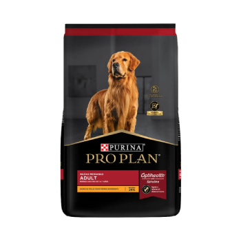
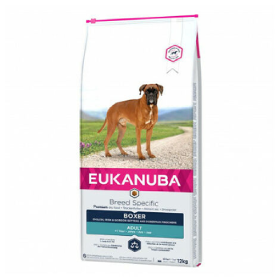
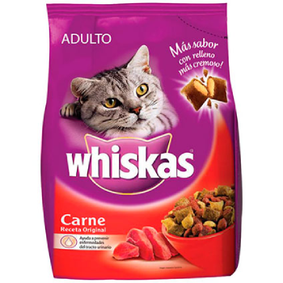
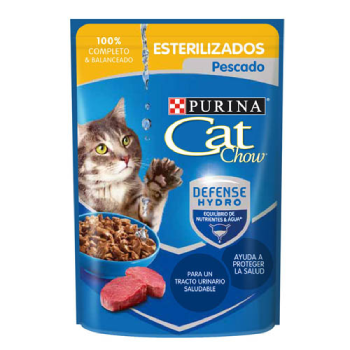
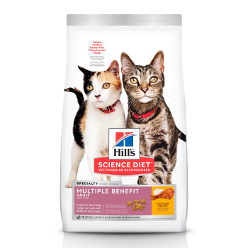

Alimento para Perros
Royal Canin

Royal Canin es una reconocida marca de alimentos para perros que se destaca por su enfoque en la nutrición específica para las necesidades individuales de cada perro. Su amplia gama de productos está diseñada para satisfacer las necesidades nutricionales de perros de diferentes razas, tamaños, edades y condiciones de salud. Royal Canin se basa en una extensa investigación científica y trabaja en colaboración con veterinarios y nutricionistas para desarrollar fórmulas precisas y equilibradas. Sus alimentos contienen ingredientes de alta calidad y se formulan teniendo en cuenta la digestibilidad, palatabilidad y biodisponibilidad de los nutrientes. Royal Canin se esfuerza por proporcionar una nutrición adaptada que promueva la salud y el bienestar de los perros, contribuyendo al desarrollo óptimo, el sistema inmunológico fuerte, la salud digestiva y la vitalidad general.
Royal CaninePro Plan
El alimento de la marca Pro Plan proporciona una nutrición de alta calidad para el bienestar y la salud de losperros. Sus fórmulas están respaldadas por una investigación científica avanzada y están diseñadas para satisfacer las necesidades específicas de los perros en cada etapa de su vida, desde cachorros hasta perros adultos y mayores. Los alimentos Pro Plan contienen ingredientes seleccionados cuidadosamente, como proteínas de alta calidad, vitaminas, minerales y antioxidantes, para promover una función inmunológica fuerte, una digestión saludable y una piel y pelaje saludables. Además, ofrecen opciones para perros con necesidades especiales, como problemas de peso, sensibilidades digestivas o condiciones de salud específicas. Pro Plan se compromete a proporcionar una nutrición completa y equilibrada que apoye el bienestar general de los perros y les ayude a alcanzar su máximo potencial.
Pro PlanEukanuba
Eukanuba se caracteriza por ofrecer una nutrición de alta calidad y enfocada en el bienestar integral de los perros. Sus fórmulas están respaldadas por años de investigación y desarrollo, así como por la colaboración con veterinarios y expertos en nutrición animal. Eukanuba se compromete a proporcionar una nutrición equilibrada y adaptada a las necesidades específicas de cada perro, considerando factores como la raza, el tamaño, la edad y las necesidades particulares de cada etapa de la vida. Sus alimentos contienen ingredientes de alta calidad, como proteínas de origen animal, grasas saludables y una mezcla de vitaminas y minerales esenciales. Eukanuba se centra en promover una salud óptima, una función inmunológica fuerte, una digestión saludable, un peso adecuado y una piel y pelaje saludables en los perros. Con Eukanuba, los dueños de mascotas pueden confiar en que están proporcionando a sus perros una nutrición de calidad que contribuye a su bienestar general.
EukanubaAlimento para Gatos
Whiskas
Whiskas se ha especializado en satisfacer las necesidades nutricionales y gustos de los felinos. Sus productos están formulados teniendo en cuenta el instinto natural de los gatos y su preferencia por los sabores y texturas específicas. Whiskas ofrece una variedad de opciones, desde alimentos secos hasta húmedos, que contienen ingredientes de alta calidad y nutrientes esenciales para una dieta equilibrada. Estos alimentos están enriquecidos con vitaminas, minerales y antioxidantes para apoyar la salud general, el sistema inmunológico, la salud digestiva y el mantenimiento de una piel y pelaje saludables en los gatos. Whiskas comprende la importancia de proporcionar una alimentación adecuada y sabrosa para los gatos, y se esfuerza por ofrecer productos que satisfagan tanto las necesidades nutricionales como las preferencias gustativas de los felinos.
WhiskasCat Chow
Cat Chow se ha centrado en proporcionar una nutrición equilibrada y de calidad para los felinos. Sus fórmulas están diseñadas para satisfacer las necesidades específicas de los gatos en cada etapa de su vida, desde gatitos hasta gatos adultos y mayores. Cat Chow utiliza ingredientes seleccionados cuidadosamente, como proteínas de alta calidad, vitaminas y minerales esenciales, para promover una salud óptima y el bienestar general de los gatos. Estos alimentos están formulados para ofrecer una digestión saludable, un sistema inmunológico fuerte y un pelaje brillante. Cat Chow también ofrece variedad en sus productos, incluyendo opciones para gatos con necesidades especiales, como problemas de peso o sensibilidades alimentarias. Con Cat Chow, los dueños de gatos pueden confiar en que están proporcionando a sus mascotas una alimentación balanceada que se adapta a sus necesidades individuales y contribuye a su salud y felicidad.
Cat ChowHill`s
Hills se enfoca en brindar una nutrición de alta calidad y basada en la ciencia veterinaria. Sus fórmulas están respaldadas por investigaciones exhaustivas y la colaboración con veterinarios y expertos en nutrición animal. Hills ofrece una amplia gama de alimentos para gatos que se adaptan a diferentes necesidades, como gatos con problemas de peso, sensibilidades alimentarias, salud dental o condiciones de salud específicas. Sus productos contienen ingredientes de alta calidad, como proteínas de origen animal, vitaminas, minerales y antioxidantes, para promover una salud óptima, un sistema inmunológico fuerte y un pelaje saludable. Además, Hills utiliza tecnologías especiales en la elaboración de sus alimentos, como la gestión de pH urinario para gatos propensos a problemas del tracto urinario. Con Hills, los dueños de gatos pueden confiar en que están proporcionando una nutrición completa y balanceada que respalda la salud y el bienestar de sus queridas mascotas.
Hills